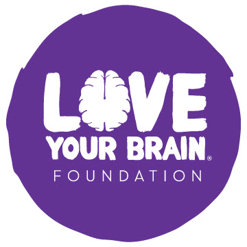
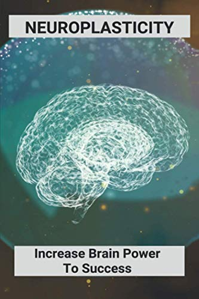

Resources for Recovery
Organizations & Support Groups
- LoveYourBrain - TBI support group Our research-based certification-level, online trainings equip yoga and mindfulness teachers, clinicians, brain injury advocates, and people with TBI to lead healing spaces for our trauma-informed curricula! 
Therapies & Rehabilitation
- Neuroplasticity: Increase Brain Power To Success: Neuroplasticity Exercises - Inexspensive book to assit in teaching exercises to increase neuroplasticity 